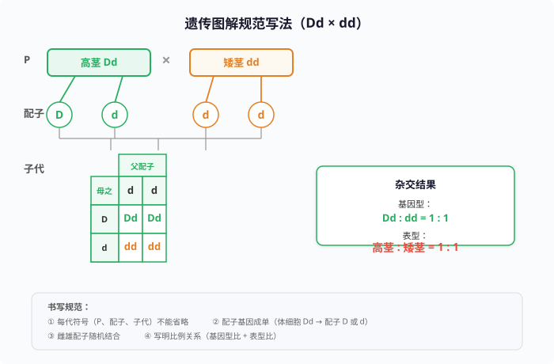
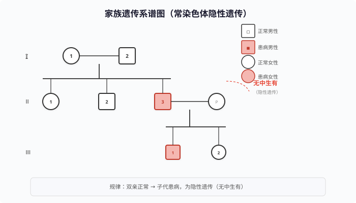
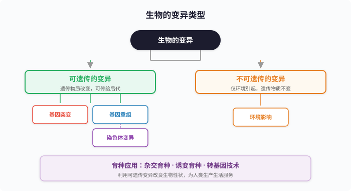

专题一：基因控制生物的性状
性状与相对性状性状：生物体所有特征的总和，如人的单眼皮/双眼皮、豌豆的高茎/矮茎。相对性状：同种生物同一性状的不同表现形式，如人的直发和卷发、番茄的红果和黄果。
基因控制性状：基因是 DNA 上有遗传效应的片段，通过控制蛋白质的合成来控制生物的性状。转基因技术——将外源基因导入生物体内，使其产生新的性状，证明了基因控制性状。
重要实验：转基因超级鼠——将大鼠生长激素基因导入小鼠受精卵，生出的小鼠比正常小鼠大 2 倍，证明基因控制生物的性状。

A. 猫的白毛和狗的黑毛 B. 人的单眼皮和双眼皮
C. 豌豆的高茎和圆粒 D. 兔的白毛和长毛
相对性状必须是同种生物、同一性状的不同表现形式。
A✗：猫和狗不是同种生物 B✓：人是同种生物，眼皮是同一性状
C✗：高茎和圆粒不是同一性状（茎高 vs 种子形状） D✗：白毛和长毛不是同一性状（毛色 vs 毛长）
答案：B
A. 基因控制生物的性状 B. 性状控制基因的表达
C. 基因与性状无关 D. 生物性状不受环境影响
该实验是经典的转基因实验：转入生长激素基因→小鼠长得更大。证明了基因与性状的关系——基因控制生物的性状。
注意：性状由基因控制，但也受环境的影响（如光照影响植物叶色）。
答案：A
专题二：基因的显性和隐性
孟德尔定律基础显性基因与隐性基因：
- 显性基因：控制显性性状的基因，用大写字母表示（如 D、A、B）
- 隐性基因：控制隐性性状的基因，用小写字母表示（如 d、a、b）
- 当显性基因和隐性基因同时存在时，只表现显性基因控制的性状
纯合子与杂合子：
- 纯合子：两个基因相同（如 DD、dd）→ 稳定遗传（自交后代不出现性状分离）
- 杂合子：两个基因不同（如 Dd）→ 不稳定遗传（自交后代会出现性状分离）
Dd → 显性性状（如高茎，因为 D 对 d 为显性）
dd → 隐性性状（如矮茎）

孟德尔实验的关键结论：
① 纯种高茎（DD）× 纯种矮茎（dd）→ F1 全部为高茎（Dd）→ 高茎为显性性状
② F1（Dd）自交 → F2 中 DD:Dd:dd = 1:2:1（基因型比），高茎:矮茎 = 3:1（表型比）
③ 隐性基因（d）在 F1 中没有消失，只是被显性基因（D）掩盖了
(1) P：DD × dd → 配子：D 和 d → F1：Dd（全部高茎）
(2) F1 自交：Dd × Dd → 配子：D、d 和 D、d → F2：DD、Dd、Dd、dd
(3) 基因型比 DD:Dd:dd = 1:2:1，表型比 高茎:矮茎 = 3:1
答案：F1 全部为 Dd（高茎），F2 中高茎:矮茎 = 3:1
孩子无耳垂 → 基因型一定是 ee → 两个 e 分别来自父母双方
夫妇都有耳垂 → 各含一个 E → 所以夫妇基因型均为 Ee
P：Ee × Ee → 子代：EE:Ee:ee = 1:2:1，无耳垂(ee)概率 = 1/4
关键技巧：无中生有——亲代表现显性性状，子代出现隐性性状→亲本均为杂合子。
答案：夫妇均为 Ee
专题三：遗传图解规范写法
遗传图解核心步骤遗传图解是中考必考题型，必须规范书写。标准的遗传图解包含以下四个部分：
第二步：写出亲本产生的配子（配子中染色体数减半，基因成单存在）
第三步：写出子代的基因型（雌雄配子随机结合）
第四步：写出子代的表现型及比例
示例：写出高茎豌豆（Dd）与矮茎豌豆（dd）杂交的遗传图解：
│ │
配子：D d d
└──────┼──────┘
│
子代：Dd(高茎) dd(矮茎)
1 : 1
遗传图解的注意事项：
① 每一代的符号不能省略：P（亲代）、F1（子一代）、F2（子二代）
② 配子中的基因必须成单：体细胞 Dd → 配子 D 或 d
③ 子代基因型的来源要明确：雌雄配子随机结合
④ 比例关系要写清楚：基因型比和表现型比

│ │
配子：D d
└──────────┘
│
F1： Dd（全部高茎）
↓ 自交
F1：高茎(Dd) × 高茎(Dd)
│ │
配子：D d D d
└────┼────┘
│
F2：DD Dd dd
高茎 高茎 矮茎
3 : 1
孩子白化病 → aa → a 分别来自父母
父母正常 → 各有一个 A → 双方均为 Aa
│ │
配子：A a A a
└────┼────┘
│
子代：AA Aa aa
正常 正常 白化病
3 : 1
专题四：一对基因的遗传分析与计算
杂交 · 测交 · 自交三种交配方式及其结果（一对等位基因 Aa）：
| 交配类型 | 亲本组合 | 子代基因型 | 子代表型比 |
|---|---|---|---|
| 杂交 | AA × aa | 全部 Aa | 全部显性 |
| 自交 | Aa × Aa | AA:Aa:aa = 1:2:1 | 显性:隐性 = 3:1 |
| 测交 | Aa × aa | Aa:aa = 1:1 | 显性:隐性 = 1:1 |
| 纯合自交 | AA × AA | 全部 AA | 全部显性 |
| 纯隐自交 | aa × aa | 全部 aa | 全部隐性 |
例：双眼皮父母生出单眼皮孩子 → 单眼皮为隐性
方法二（有中生无）：双亲表现不同或一方患病，子代全部表现某性状 → 子代表现的为显性
例：高茎豌豆与矮茎豌豆杂交，子代全部高茎 → 高茎为显性
概率计算核心公式：
- 子代患隐性病概率：Aa × Aa → 1/4 aa（患病），3/4 A_（正常）
- 子代患显性病概率：Aa × aa → 1/2 Aa（患病），1/2 aa（正常）
- 生男生女不影响遗传病概率（除非伴性遗传）
① 患白化病的概率是多少？② 是正常孩子的概率是多少？③ 是正常纯合子的概率是多少？
夫妇正常生患病孩子 → 双方均为 Aa。
Aa × Aa → AA:Aa:aa = 1:2:1
① 患病(aa) = 1/4 ② 正常(AA+Aa) = 3/4 ③ 正常纯合子(AA) = 1/3（在正常孩子中）
关键区别：②是所有孩子中正常的概率，③是正常孩子中是纯合子的概率。
答案：① 1/4 ② 3/4 ③ 1/3
① 他们生一个多指孩子的概率？② 他们生一个正常孩子的概率？③ 他们生两个都是多指孩子的概率？
Tt × tt → Tt（多指）: tt（正常）= 1:1
① 一个孩子多指概率 = 1/2 ② 一个孩子正常概率 = 1/2
③ 两个都多指 = 1/2 × 1/2 = 1/4（乘法原理：每次生育是独立事件）
注意：每次生育互不影响，之前生什么孩子不影响下一次。
答案：① 1/2 ② 1/2 ③ 1/4
(1) 棕毛母牛 → 基因型一定是 bb
(2) 后代黑毛:棕毛 = 1:1 → 这是测交结果
(3) 测交 Bb × bb → Bb:bb = 1:1
结论：黑毛公牛一定是 Bb（杂合子）
如果公牛是 BB × bb → 后代全部为 Bb（全黑毛），与事实不符。
答案：黑毛公牛为 Bb
专题五：遗传概率计算提高
经典题型归纳常见题型归类：
解题关键：写出遗传图解，按分离定律逐个分析。
解题关键：
- 子代 3:1 → 亲本 Aa × Aa（自交）
- 子代 1:1 → 亲本 Aa × aa（测交）
- 子代全部显性 → 亲本 AA × _ _
- 子代全部隐性 → 亲本 aa × aa
若 A 基因使花粉不育，则 Aa 自交 → 只有 a 花粉能受精 → 子代 Aa:aa = 1:1
(1) 长翅 × 残翅 → 1:1 → 亲本：Vv × vv
(2) F1 长翅果蝇基因型为 Vv
(3) F1 长翅自由交配：Vv × Vv → VV:Vv:vv = 1:2:1
(4) 残翅(vv)比例 = 1/4
注意："自由交配"与"自交"在此题中结果相同（因为只有 Vv 一种基因型）。
答案：1/4
这是不完全显性的特殊情况——杂合子（Rr）表现为中间性状（粉色）。
Rr × Rr → RR:Rr:rr = 1:2:1
表现型：红色:粉色:白色 = 1:2:1
与完全显性的区别：完全显性时 Rr 表现为红色（与 RR 相同），这里 Rr 表现为不同的粉色。
答案：红色:粉色:白色 = 1:2:1
正常情况下 Aa × Aa → AA:Aa:aa = 1:2:1 → 紫花:白花 = 3:1
实际为 2:1 → 说明 AA 纯合致死（AA 个体不能存活）
存活的个体只有 Aa 和 aa，比例为 2:1
验证：如果 AA 致死，则 Aa × aa → Aa:aa = 1:1（测交全部存活）
答案：AA 纯合致死，导致子代中紫花只有 Aa（无 AA），紫花:白花 = 2:1
专题六：人的性别遗传
性染色体·生男生女男女染色体的区别：
- 男性体细胞染色体：44 + XY = 46 条（22 对常染色体 + XY 性染色体）
- 女性体细胞染色体：44 + XX = 46 条（22 对常染色体 + XX 性染色体）
- 男性产生两种精子：含 X 染色体和含 Y 染色体的精子（比例 1:1）
- 女性只产生一种卵细胞：含 X 染色体的卵细胞
生男生女的机理：
- 若 X 精子与卵细胞结合 → XX → 女性
- 若 Y 精子与卵细胞结合 → XY → 男性
- 生男生女的概率 = 1:1，取决于父亲的哪种精子与卵细胞结合

性别决定的关键点：
① 生男生女的机会均等，每次怀孕都是独立事件（不因已生男孩而影响下一胎性别）
② 男性可以产生两种精子（X 和 Y），女性只产生一种（X）
③ 性染色体在配子中成单存在：精子含 X 或 Y，卵细胞含 X
每次生育，生男生女的概率都是 1/2（50%），因为父亲产生 X 和 Y 精子的比例始终为 1:1。
已经生的孩子性别不影响下一次的性别——每次都是独立事件。
所以无论已生几个女孩，下一个孩子是男孩的概率始终是 1/2。
答案：都是 1/2（50%）。
P：X^B Y × X^B X^b
配子：X^B、Y 和 X^B、X^b
子代：X^B X^B（正常女）: X^B X^b（携带者女）: X^B Y（正常男）: X^b Y（色盲男）= 1:1:1:1
色盲儿子（X^b Y）概率 = 1/4
注意：儿子中患色盲的概率 = 1/2，所有后代中色盲儿子的概率 = 1/4。
答案：1/4
P：X^B Y × X^b X^b
配子：X^B、Y 和 全部 X^b
子代：
女儿：X^B X^b（全部是携带者，表型正常）—— 患病概率 0
儿子：X^b Y（全部是色盲）—— 患病概率 100%
规律：女性色盲 × 正常男性 → 儿子全部色盲，女儿全部正常但为携带者（交叉遗传）。
答案：女儿患病概率 0，儿子患病概率 100%。
专题七：遗传图解综合训练
中考真题演练本专题集中练习遗传图解的书写和概率计算，涵盖中考常见题型。
① 亲本圆粒和皱粒的基因型分别是什么？
② 写出 F1 自交的遗传图解，并计算 F2 中皱粒的比例。
① F1 全部为圆粒 → 亲本圆粒为 RR，皱粒为 rr
P：RR × rr → 配子 R 和 r → F1 全部 Rr（圆粒）
② F1 自交遗传图解：
配子：R r R r
└────┼────┘
F2：RR Rr rr
圆粒 圆粒 皱粒
3 : 1
答案：① 圆粒 RR，皱粒 rr ② 皱粒比例 = 1/4
① 一对双眼皮的夫妇生了一个单眼皮的孩子，该夫妇的基因型分别是什么？
② 他们再生一个双眼皮孩子的概率是多少？
③ 如果他们生的第一个孩子是双眼皮，这个双眼皮孩子是纯合子的概率是多少？
① 单眼皮孩子 = aa → a 来自父母双方 → 夫妇均为 Aa
② Aa × Aa → AA:Aa:aa = 1:2:1
双眼皮(AA+Aa)概率 = 3/4
③ 该双眼皮孩子已知表型为双眼皮 → 基因型只可能是 AA 或 Aa
在双眼皮孩子中：AA:Aa = 1:2 → 纯合子(AA)概率 = 1/3
易错提醒：第一问中"孩子"是未知性别的，第二问和第三问中已知是双眼皮 → 条件概率不同。
答案：① 均为 Aa ② 3/4 ③ 1/3
① 白化病是显性遗传还是隐性遗传？
② Ⅰ-1 和 Ⅰ-2 的基因型分别是什么？
③ Ⅱ-2（正常）是纯合子的概率是多少？
④ Ⅱ-1（正常）与一正常男性（携带者）结婚，生患病孩子的概率是多少？
① 无中生有：Ⅰ-1 和 Ⅰ-2 正常，生出了Ⅱ-3患病 → 白化病为隐性遗传
② Ⅱ-3患病(aa) → a 来自Ⅰ-1和Ⅰ-2 → 均为 Aa
③ Ⅱ-2正常(A_)，其父母均为 Aa → 正常孩子中 AA:Aa = 1:2 → 纯合子概率 = 1/3
④ Ⅱ-1正常(A_)，与携带者(Aa)结婚 → Ⅱ-1有 1/3 概率是 AA，2/3 概率是 Aa
- 若 AA × Aa → 全部正常（患病概率 0）
- 若 Aa × Aa → 患病概率 1/4
- 综合：患病概率 = 2/3 × 1/4 = 1/6
答案：① 隐性 ② 均为 Aa ③ 1/3 ④ 1/6

① 儿子患血友病的概率？② 女儿患血友病的概率？③ 两个孩子都正常的概率？
P：X^B Y（夫正常）× X^B X^h（妻携带者）
子代：X^B X^B : X^B X^h : X^B Y : X^h Y = 1:1:1:1
① 儿子中 X^B Y: X^h Y = 1:1 → 儿子患病 = 1/2
② 女儿中 X^B X^B: X^B X^h = 1:1 → 全部正常（携带者不患病）→ 女儿患病概率 = 0
③ 两个孩子都正常：儿子正常概率 1/2，女儿正常概率 1 → 1/2 × 1 = 1/2
答案：① 1/2 ② 0 ③ 1/2
专题八：生物的变异
可遗传与不可遗传变异变异的概念：生物亲代与子代之间、子代与子代个体之间存在的差异。变异是普遍存在的。
变异的分类：
① 可遗传的变异：由遗传物质改变引起，可以传给后代
来源：基因突变、基因重组、染色体变异
② 不可遗传的变异：由环境因素引起，遗传物质没有改变，不能传给后代
例：同种小麦在不同土壤中长势不同、晒黑后皮肤变黑

变异在育种中的应用：
① 杂交育种：将不同品种的优良性状组合在一起（如杂交水稻）
② 诱变育种：用物理/化学方法诱导基因突变（如太空育种）
③ 转基因技术：将外源基因转入生物体内（如抗虫棉）
区分可遗传与不可遗传变异的关键：看遗传物质是否改变。遗传物质改变→可遗传；仅环境引起→不可遗传。
A. 人在阳光下晒黑 B. 玉米粒颜色的差异
C. 手术割的双眼皮 D. 因水肥充足而粒大饱满的小麦
A✗：晒黑是紫外线引起皮肤黑色素增加，遗传物质未变
B✓：玉米粒颜色的差异由基因控制，可遗传
C✗：手术改变的只是外形，遗传物质未变
D✗：水肥充足是环境因素，遗传物质未变
答案：B
太空育种利用了诱变育种的原理——太空中的微重力、高辐射环境提高了基因突变的频率，使种子产生更多的变异，再通过人工选择获得优良品种。
这种变异是可遗传的（遗传物质发生改变）。
答案：诱变育种——利用太空环境诱导基因突变，产生可遗传的变异。